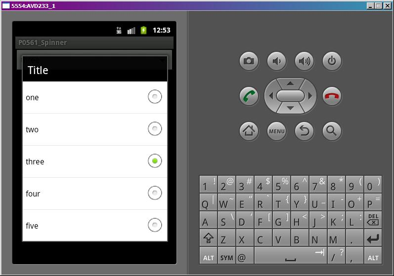
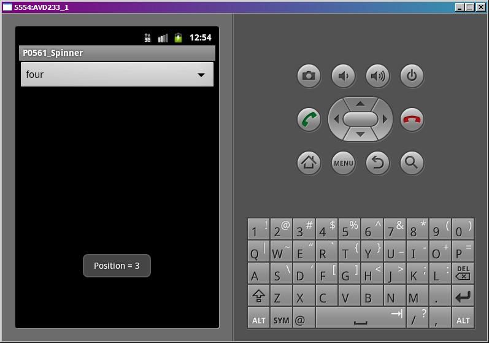

В этом уроке:
- используем Spinner
Многовато уроков получилось про адаптеры и списки. Я изначально хотел буквально пару примеров показать, но чето затянуло и расписал чуть ли не все существующие адаптеры ) Напоследок сделаем пару полезных примеров, где еще используются адаптеры. В этом небольшом уроке рассмотрим Spinner.
Spinner – это выпадающий список, позволяющий выбрать одно значение. Он позволяет сэкономить место на экране. Я думаю, все встречали его не только в Android, но и в других языках программирования.
Сделаем простой пример.
Создадим проект:
Project name: P0561_Spinner
Build Target: Android 4.0
Application name: Spinner
Package name: ru.startandroid.develop.p0561spinner
Create Activity: MainActivity
В экран main.xml поместим Spinner:
<?xml version="1.0" encoding="utf-8"?>
<LinearLayout
xmlns:android="http://schemas.android.com/apk/res/android"
android:layout_width="fill_parent"
android:layout_height="fill_parent"
android:orientation="vertical">
<Spinner
android:id="@+id/spinner"
android:layout_width="match_parent"
android:layout_height="wrap_content">
</Spinner>
</LinearLayout>Код MainActivity.java:
package ru.startandroid.develop.p0561spinner;
import android.app.Activity;
import android.os.Bundle;
import android.view.View;
import android.widget.AdapterView;
import android.widget.AdapterView.OnItemSelectedListener;
import android.widget.ArrayAdapter;
import android.widget.Spinner;
import android.widget.Toast;
public class MainActivity extends Activity {
String[] data = {"one", "two", "three", "four", "five"};
/** Called when the activity is first created. */
@Override
public void onCreate(Bundle savedInstanceState) {
super.onCreate(savedInstanceState);
setContentView(R.layout.main);
// адаптер
ArrayAdapter<String> adapter = new ArrayAdapter<String>(this, android.R.layout.simple_spinner_item, data);
adapter.setDropDownViewResource(android.R.layout.simple_spinner_dropdown_item);
Spinner spinner = (Spinner) findViewById(R.id.spinner);
spinner.setAdapter(adapter);
// заголовок
spinner.setPrompt("Title");
// выделяем элемент
spinner.setSelection(2);
// устанавливаем обработчик нажатия
spinner.setOnItemSelectedListener(new OnItemSelectedListener() {
@Override
public void onItemSelected(AdapterView<?> parent, View view,
int position, long id) {
// показываем позиция нажатого элемента
Toast.makeText(getBaseContext(), "Position = " + position, Toast.LENGTH_SHORT).show();
}
@Override
public void onNothingSelected(AdapterView<?> arg0) {
}
});
}
}Код несложен. Создаем адаптер, используем simple_spinner_item в качестве layout для отображения Spinner на экране. А методом setDropDownViewResource указываем какой layout использовать для прорисовки пунктов выпадающего списка.
Метод setPrompt устанавливает текст заголовка выпадающего списка, а setSelection – элемент, который мы хотим выделить. Оба метода, разумеется, необязательны. Я их использовал для демонстрации.
Обработчик выбора элемента из списка присваивается методом setOnItemSelectedListener. Будем выводить на экран позицию выбранного элемента.
Все сохраним и запустим. Нажмем на Spinner.

Виден заголовок Title и выделен элемент с позицией 2. Выберем пункт four.

Обработчик показал, что выделили пункт с позицией 3.
Чтобы определить, какой элемент выделен сейчас, используйте spinner.getSelectedItemPosition(). Чтобы получить текст этого элемента можно сразу выполнять spinner.getSelectedItem().toString().